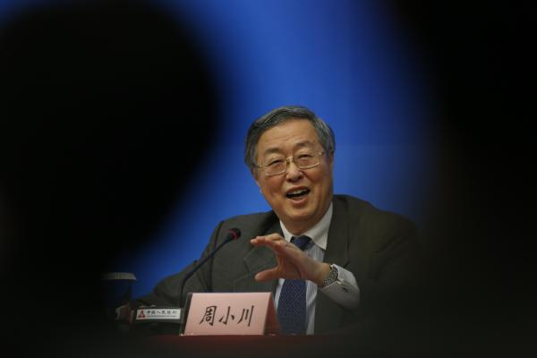
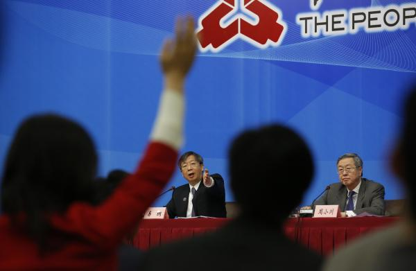

央行行长周小川上海记者会实录:股本融资市场不能拔苗助长
澎湃日报
2016-02-26 14:10

2月26日，中国人民银行行长周小川在央行上海总部举行新闻发布会。
2月26日，为期两天的G20财长和
央行行长会议开幕，上午，中国人民银行行长周小川在央行上海总部，就本次G20财长和央行行长会议、中国经济、人民币汇率以
及中国债务问题等热点话题回答了记者提问。2月26日，中国人民银行行长周小川在央行上海总部举行新闻发布会。
本次记者会由央行副行长易纲主持，周小川总共回答了11个问题，主题分别为 外汇储备、资本外流、利率走廊、全球金融市场波动、负利率、汇率、房贷、债务上限等。
以下是记者会实录
易纲： 女士们、先生们，各位记者朋友，大家上午好！
下面首先请周小川行长讲几句话。
周小川：各位记者朋友们早上好， 欢迎大家参加今天的记者会。刚才易纲先生说到我们今明两天将进行G20财长和央行行长会。我简单说几句，G20是全球主要国家 协调宏观经济政策、共同合作，推动全球经济增长和金融稳定的重要平台，并在近年来已经发挥重要的作用。比如应对全球金融危 机，推动包括巴塞尔标准在内的全球金融部门的改革，国际货币资金组织份额和治理改革形成共识，实现全球税收合作方面取得了 重要进展。
中国是G20的重要参与国，习近平主席参加了G20圣彼得堡的峰会，前年参加了布里斯班的峰会，去年参加了安 塔利亚的峰会，中国在G20中也起到了我们作为一个经济大国应有的作用，也致力于解决G20所关心的各种问题。
今年中国 接任G20主席国，所以我们可能在这方面需要做出更多的努力。大家都很关注G20的峰会，每年还有四次部长和央行行长的会，此 外还有一些副手会和配套的其它会议。这次是今年的第一次G20财政部长和央行行长的会议，也是为G20做准备的一个重要的开端 。我们所关心的这些议题刚才正好我在IIF也做了一个开场白，有这么几个议题是人民银行特别关心的：一个是推动G20加强政策 协调，采取积极行动推动经济增长和维持金融稳定；另外一个是讨论完善国际金融体系的框架，构建更加平稳有序的国际货币金融 体系；再有一个是继续努力推动全球金融部门的改革，并研究如何应对金融体系中出现的新风险和脆弱性；此外还有一个推动完善 金融市场基础设施，促进普惠金融的发展；这次还有一个新的题目是研究通过绿色金融来调动更多的资源用于绿色投资。所以我就 先说这么几句，我愿意和易纲一起回答记者朋友们的问题。

2月26日，中国人民银行行长周小川（右）在央行上海总部举行新闻发布会。
第一财经广播：不久前人民
银行和银监会颁布的房地产新政再次下调了二套房个贷首付的比例，很多人认为这是加杠杆。一月份贷款增长2.5万亿，同比多增
一万多亿，甚至有些评论认为是“放水”，中央经济工作会议把去杠杆定为今年结构性改革的重要任务，在经济下行压力比较大的背
景下，我们如何看待去杠杆和加杠杆的平衡？应该如何去杠杆？2月26日，中国人民银行行长周小川（右）在央行上海总部举行新闻发布会。
周小川：您提的问题出发点是对的，就是说既然降低了贷款 条件就可以说贷款可以做得更多一点，至少个人住房的杠杆会有所提高。你提问的逻辑是对的，但我们还有以下几个考虑：
第 一个，中国作为改革转轨国家，20年以前，绝大多数人没有自己的住房，后来通过住房改革，取消福利分房，大家开始有自己的住房。 所以起步很晚，现在还有很多人没有房子，所以住房贷款按理说应该是有一个大力发展的阶段。同时在城镇化的过程中，过去房子在农 村，现在农民工城里找工作也需要租房子或者买房子，这些都造成住房贷款可能有比较快速的发展。而快速发展风险是不是很大呢？从 中国的情况看，个人住房贷款占银行总贷款中的比重还是相对偏低的，有很多国家个人贷款，特别是住房贷款可能占总贷款的40%－50% ，中国只有百分之十几，比例比较低。所以银行系统也觉得个人住房抵押贷款还是相对比较安全的产品，有发展的机会。
易纲： 非常感谢周小川行长深入浅出回答这么多问题。今天的记者会到此结束，谢谢大家！
评论